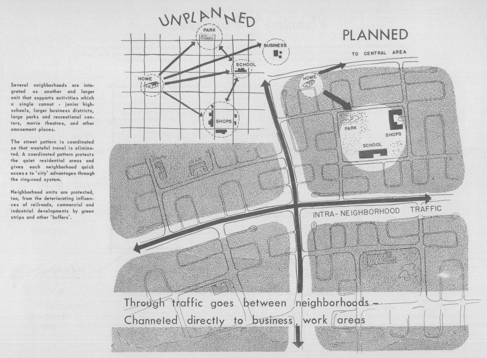

Neighborhood Analysis
Spring 2023
Learn to tell stories about neighborhoods for decision-making, public deliberation, and accountability using and principles of reproducible data analysis.
Note: This is a website under development - site content is subject to change until the class begins in January 2023.

Instructor
- Dr. Andrew J. Greenlee
- M210 Temple Buell Hall
- agreen4@illinois.edu
- Github
- urbprof
- https://fediscience.org/@urbprof
- Schedule an appointment
Teaching Assistant
- Ouafa Benkraouda
- ouafab2@illinois.edu
- Github
- Schedule an appointment
Course details
- Mondays and Wednesdays
- 11:00 AM - 12:20 PM
- Temple Buell Hall 223
- Slack